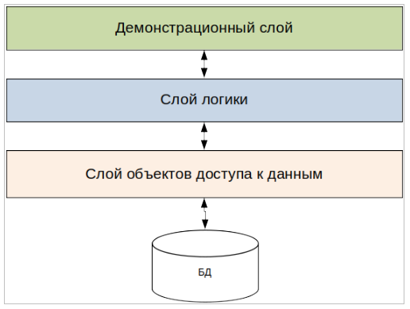

Общая архитектура системы: Используемые технологии Система ПТК «Администратор» это Web-приложение, реализованное на языке программирования Java, предоставляющее набор функциональности для обеспечения выполнения органами ПФР с 1 января 2010 года основных технологических операций и функций процесса администрирования доходов по обязательному пенсионному страхованию и обязательному медицинскому страхованию, а также выполнения дополнительных функций, реализующих обмен информацией с внешними системами государственных органов, организаций и смежными системами ПФР, осуществляемых в процессе администрирования. Реализация ПТК «Администратор» базируется на следующих платформах, технологиях и фреймворках:
Система ПТК «Администратор» подразделяется на следующие подсистемы:
Авторизация \ аутентификация Подсистема авторизации и аутентификации отвечает за обеспечение авторизации пользователей и контроля доступа к системе. В рамках данной подсистемы реализованы описания пользователей, групп, ролей и прочей информации, необходимой для корректной авторизации и аутентификации пользователей. Также данная подсистема отвечает за контроль пользовательских сессий, хранение пользовательской информации в сессии, процедуры входа и выхода из системы и предоставление авторизационных данных смежным подсистемам. Общесистемные сервисы Подсистема общесистемных сервисов предоставляет реализацию алгоритмов, используемых в различных смежных подсистемах. В данной подсистеме определяются такие общеиспользуемые (в рамках системы) сервисы, как обработка исключительных ситуаций, логирование, работа с локализованными сообщениями и т.д. Функциональные компоненты Функциональные компоненты системы отвечают за непосредственную реализацию бизнес-функциональности системы и отвечают за взаимодействие с пользователями системы. В общем случае, структура функционального компонента системы выглядит следующим образом:  |